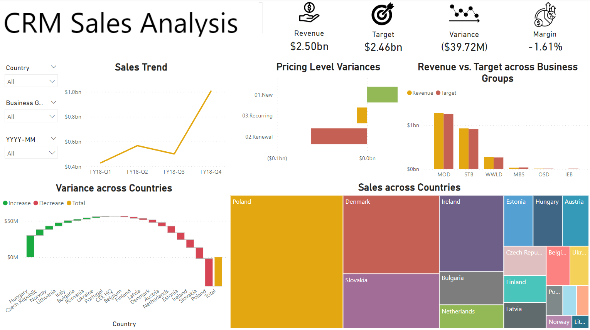

CRM Sales Analysis: Unveiling the Sales Story
The CRM Sales Analysis Power BI dashboard is more than a collection of data visualizations; it's a narrative that can potentially guide users through the intricate landscape of sales performance. Each element of the dashboard is a chapter in the story of how the company is performing, providing insights that drive strategic decisions. Let's embark on this storytelling journey through the dashboard, revealing the insights hidden within the data.
Chapter 1: The Key Metrics at a Glance
Our story begins with the big picture. The total revenue, total target, variance, and margin are displayed prominently on data cards. These metrics serve as our compass, providing a quick snapshot of the company’s financial health. The data cards tell us where we stand right now—whether we’re on track, lagging, or exceeding expectations.
Insight: The total revenue indicates robust sales, but the variance card reveals a gap between actual performance and targets. The margin card further highlights profitability concerns, setting the stage for deeper investigation.
Chapter 2: Customizing the View
As we delve deeper, the filter/slicer for country, business group, and year-month becomes our magnifying glass. This tool allows us to focus on specific areas, adjusting our view to see different facets of the sales landscape.
Insight: Filtering by the latest quarter shows that Poland is outperforming other regions. This customization helps pinpoint where to focus our attention next.
Chapter 3: Unfolding the Sales Trends
Next, we explore the sales trend line chart across various quarters. This chart is like flipping through the pages of a calendar, showing how sales have ebbed and flowed over time.
Insight: The trend line reveals a peak in Q4, but an unexpected dip in Q3. This anomaly prompts further questions: Was there a market disruption? Did a major client delay their purchase?
Chapter 4: Decoding Pricing Strategies
The clustered bar chart showcasing pricing level variance for new, recurring, and renewal sales introduces us to the nuances of our pricing strategies. This is where we understand the impact of our pricing decisions on different types of sales.
Insight: The chart reveals that renewal sales have double the variance of new sales, and new sales have triple the variance of recurring sales. This indicates significant instability in our renewal pricing strategy, prompting a need to investigate and stabilize renewal pricing, while also addressing the volatility in new sales pricing.
Chapter 5: Evaluating Business Group Performance
The clustered column chart comparing revenue versus targets across business groups is our scorecard for each segment of the business. It helps us identify which groups are the star performers and which need improvement.
Insight: The chart reveals that most business groups have achieved or surpassed their targets, showcasing strong overall performance.
Chapter 6: Mapping Regional Variances
The waterfall chart showing variance across countries provides a geographical perspective. It breaks down the overall performance, highlighting contributions from each country.
Insight: The chart reveals that while Hungary has contributed significantly to positive variance, several smaller markets, such as those in Estonia, have underperformed. This insight suggests opportunities for market-specific strategies and localized support.
Chapter 7: Visualizing Sales Distribution
Finally, the treemap offers a visual representation of sales distribution across countries. This is our map of the sales territory, showing which regions dominate and which are minor players.
Insight: The treemap shows that the Poland has a substantial share of sales, but many smaller European countries collectively hold a significant portion as well. This highlights the importance of a diverse market approach and the potential of untapped regions.
Conclusion: Crafting the Strategy
As we conclude our story, the dashboard has guided us through the highs and lows, uncovering insights and raising critical questions. The data cards provided the headline numbers, the filters and slicers allowed for tailored views, and each chart added depth and detail to our understanding.
The narrative reveals areas of strength and opportunities for growth, setting the stage for strategic decisions. By following this story, stakeholders can make informed choices to steer the company towards greater success, optimizing strategies, and focusing efforts where they are needed most.
Thus, the CRM Sales Analysis dashboard is not just a tool for data presentation, but a storyteller, illuminating the path forward with clarity and insight.
Relevant links:
GitHub Repo - CRM Sales Analysis Dashboard
Date published: 15th May, 2024
Date modified: 15th May, 2024
Tags
Power BI
Data Visualization
Data Storytelling